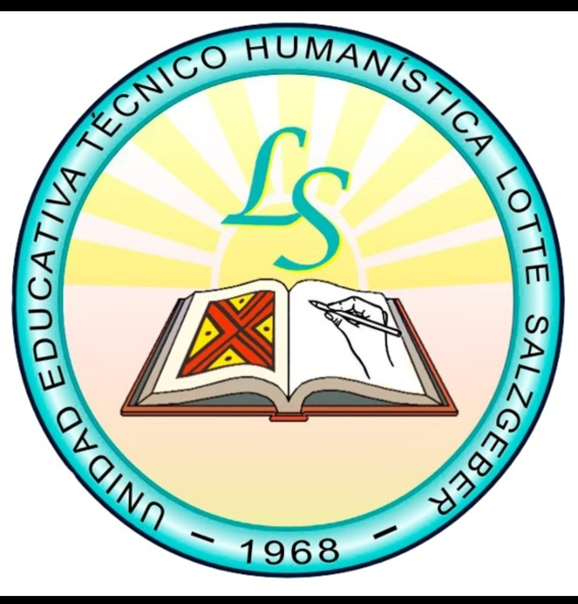
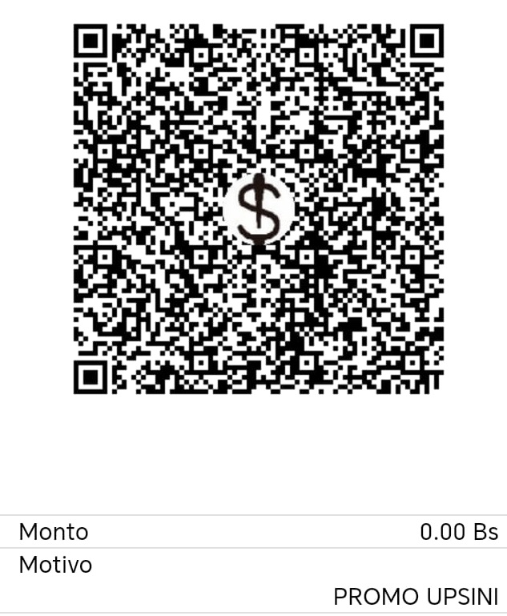

✨ ¡YA SE VIENE LA FIESTA DE EXPROMOCIONES! ✨
"Con el entusiasmo de revivir los mejores años y fortalecer nuestros lazos, la Promoción 2007 'UPSINI' tiene el honor de extenderle una cordial invitación a ser parte inolvidable del Gran Reencuentro de Expromociones Gestión 2026. Su presencia dará un brillo muy especial a esta celebración."
📅 Fecha: 19 de Septiembre
⏰ Hora: 20:00 (8:00 PM)
📍 Lugar: Las Tablitas/ San Ignacio de Velasco
🏆 DISTINGUIDOS PADRINOS Y MADRINAS DE PREMIACIÓN
Hay personas cuya huella en nuestra comunidad se define por su generosidad inagotable, su constante apoyo al deporte y su indiscutible calidad humana. Su valiosa trayectoria y espíritu solidario los han convertido en el pilar fundamental que hoy sostiene este gran evento.
Es por ello que la Promoción 2007 'UPSINI' tiene el alto honor de realizar el nombramiento oficial como Padrinos y Madrinas de Premiación a quienes representan el verdadero significado del compromiso y la amistad:
Conociendo de cerca su nobleza y sabiendo que su respaldo a la juventud y al deporte siempre ha sido incondicional, damos por sentado su honrosa aceptación a esta distinción. Su apoyo no solo galardona a nuestros deportistas, sino que inmortaliza su nombre en la historia de este reencuentro.
Con el más profundo agradecimiento y estima,
Promoción 2007 'UPSINI'
"Estimados padrinos, su presencia da un sentido muy especial a nuestra premiación deportiva. Queremos invitarles a compartir momentos de alegría, hermandad y la mejor música junto al grupo SOM Santa Cruz. ¡Será un honor celebrar este gran cierre deportivo a su lado!"
✨ ¡GRACIAS POR SER PARTE DE ESTE EQUIPO! ✨
Padrinos, el éxito de esta fiesta depende de todos. Si desean realizar su aporte de forma rápida y sencilla, pueden hacerlo a través del siguiente código QR:

Una vez realizada la transacción, por favor envíe su comprobante a cualquiera de los números de contacto. ¡Gracias por ayudarnos a hacer posible este sueño que revive nuestra historia!
📞 Informes y consultas:
68633503 / 72857546 / 77089263